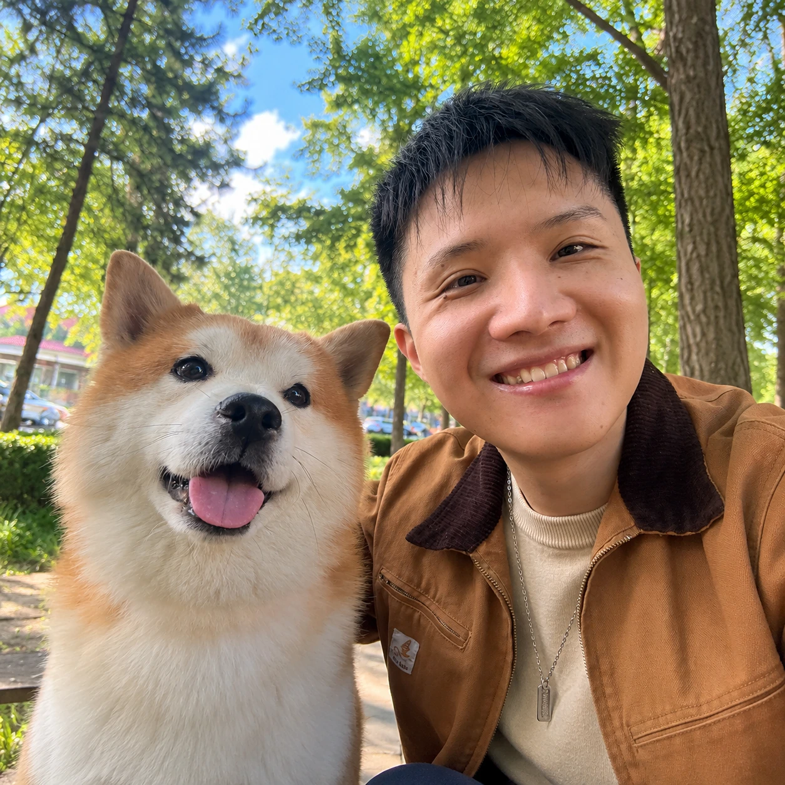

Learning sciences
Xinlin Ge
I study how people learn with AI.
I’m a Ph.D. student at the University of Utah, advised by Chenglu Li. My work brings together mathematics education, teaching, and the design of human-centered AI systems.

Work log
A day-by-day view of my research activity. Open my work log
Reading notes
Papers and questions from the conference proceedings.
- {% include homepage-notes.html %}
News
- Launched a new version of my personal website.
- Completed my M.A. in Mathematics Education at University College London.